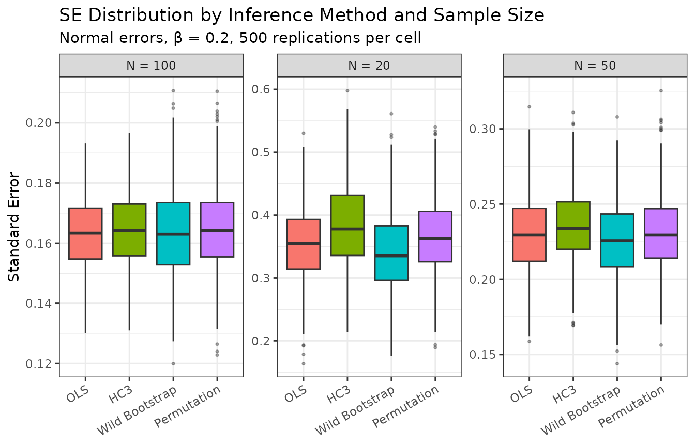
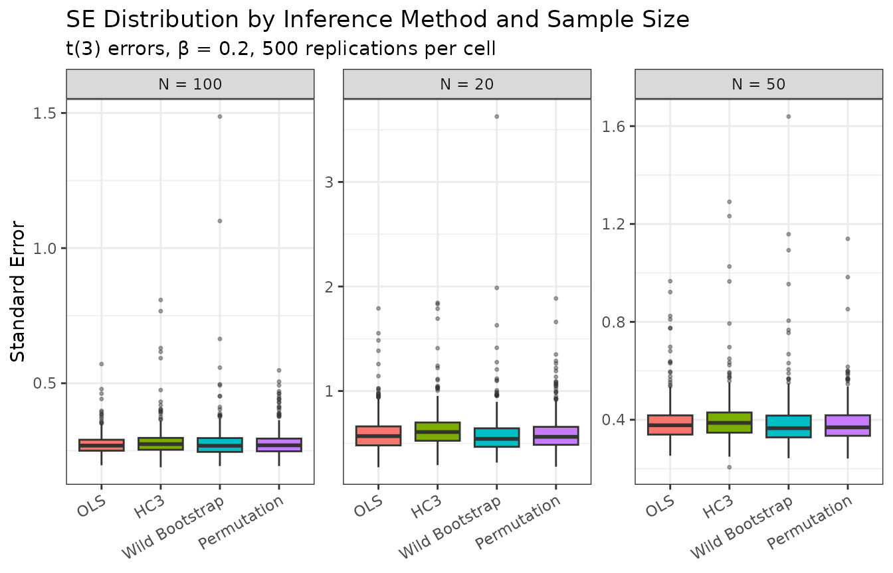

Inference Comparison: OLS, HC3, Wild Bootstrap, Permutation
Source:vignettes/simulation_comparison.Rmd
simulation_comparison.RmdOverview
This vignette evaluates four inference procedures available in
lwdidR via a Monte Carlo simulation study. The methods
are:
vce argument |
Description |
|---|---|
NULL |
Homoskedastic OLS t-test |
"hc3" |
HC3 heteroskedasticity-robust |
"wildboot" |
Wild cluster bootstrap (Rademacher weights) |
"permutation" |
Permutation / randomisation inference |
The wild bootstrap and permutation tests are distribution-free alternatives that are expected to maintain correct size at small N even when errors are non-normal, at the cost of additional computation.
Data-Generating Process
We consider a balanced common-timing panel:
- units (half treated), ,
- (removed by demeaning)
- (normal) or (heavy tails)
- for size experiments; for power / coverage
library(lwdidR)
library(ggplot2)
#' Simulate one dataset and return a one-row data.frame of results
#'
#' @param N Total units (N/2 treated)
#' @param beta True ATT
#' @param dist Error distribution: "normal" or "t3"
#' @param method vce argument passed to lwdid()
#' @param nboot Bootstrap / permutation replications
#' @param seed RNG seed
one_sim <- function(N, beta, dist, method, nboot = 199, seed = NULL) {
if (!is.null(seed)) set.seed(seed)
T_pre <- 3L
T_post <- 3L
T_tot <- T_pre + T_post
periods <- seq_len(T_tot)
post_periods <- seq(T_pre + 1L, T_tot)
unit_ids <- seq_len(N)
treated_ids <- seq_len(N %/% 2L)
# Fixed effects
alpha <- stats::rnorm(N)
# Errors
eps <- if (dist == "normal") {
matrix(stats::rnorm(N * T_tot), N, T_tot)
} else {
matrix(stats::rt(N * T_tot, df = 3), N, T_tot)
}
# Outcome
D_mat <- outer(unit_ids %in% treated_ids, periods >= (T_pre + 1L), `&`) * 1L
Y_mat <- outer(alpha, rep(1, T_tot)) + beta * D_mat + eps
# Long format
# post = 1 only for treated units in post-treatment periods.
# lwdid() identifies treated units as those that ever have post == 1,
# so control units must always have post == 0.
id_vec <- rep(unit_ids, times = T_tot)
t_vec <- rep(periods, each = N)
post_vec <- as.integer(id_vec %in% treated_ids & t_vec >= (T_pre + 1L))
df <- data.frame(id = id_vec, t = t_vec, post = post_vec,
y = as.numeric(Y_mat))
vce_arg <- if (method == "ols") NULL else method
nboot_arg <- if (method %in% c("wildboot", "permutation")) nboot else 999L
res <- tryCatch(
lwdid(df, y = "y", ivar = "id", tvar = "t", post = "post",
rolling = "demean", vce = vce_arg,
nboot = nboot_arg, nperm = nboot_arg),
error = function(e) NULL
)
if (is.null(res)) {
return(data.frame(N = N, beta = beta, dist = dist, method = method,
att = NA, se = NA, pvalue = NA, ci_lower = NA,
ci_upper = NA))
}
data.frame(
N = N,
beta = beta,
dist = dist,
method = method,
att = res$att_overall,
se = res$se_overall,
pvalue = res$pvalue,
ci_lower = res$ci_lower,
ci_upper = res$ci_upper
)
}Simulation
We run S = 500 iterations per cell. Cells are defined by , error distribution, treatment status ( or ), and the four inference methods. Bootstrap and permutation replications are set to 199 for speed.
set.seed(42)
S <- 500L
N_vals <- c(20L, 50L, 100L)
methods <- c("ols", "hc3", "wildboot", "permutation")
dists <- c("normal", "t3")
betas <- c(0, 0.2)
# Build parameter grid
grid <- expand.grid(
N = N_vals,
beta = betas,
dist = dists,
method = methods,
stringsAsFactors = FALSE
)
# Run all simulations
results_list <- vector("list", nrow(grid) * S)
idx <- 0L
for (row_i in seq_len(nrow(grid))) {
g <- grid[row_i, ]
for (s in seq_len(S)) {
idx <- idx + 1L
results_list[[idx]] <- one_sim(
N = g$N,
beta = g$beta,
dist = g$dist,
method = g$method,
nboot = 199L,
seed = row_i * 10000L + s
)
}
}
sim_df <- do.call(rbind, results_list)
size_df <- sim_df[sim_df$beta == 0, ]
power_df <- sim_df[sim_df$beta == 0.2, ]
size_df$reject <- size_df$pvalue < 0.05
power_df$reject <- power_df$pvalue < 0.05
power_df$covered <- power_df$ci_lower <= 0.2 & 0.2 <= power_df$ci_upper
# Summary CSVs: one row per (N, dist, method) cell
size_summ <- do.call(rbind, by(size_df, list(size_df$N, size_df$dist, size_df$method),
function(d) data.frame(N = d$N[1], dist = d$dist[1], method = d$method[1],
rejection_rate = mean(d$reject, na.rm = TRUE),
mean_se = mean(d$se, na.rm = TRUE), median_se = median(d$se, na.rm = TRUE),
sd_se = sd(d$se, na.rm = TRUE))))
power_summ <- do.call(rbind, by(power_df, list(power_df$N, power_df$dist, power_df$method),
function(d) data.frame(N = d$N[1], dist = d$dist[1], method = d$method[1],
rejection_rate = mean(d$reject, na.rm = TRUE),
coverage = mean(d$covered, na.rm = TRUE),
mean_se = mean(d$se, na.rm = TRUE), median_se = median(d$se, na.rm = TRUE),
sd_se = sd(d$se, na.rm = TRUE))))
dir.create("../output", showWarnings = FALSE)
write.csv(size_summ, "../output/sim_size_results.csv", row.names = FALSE)
write.csv(power_summ, "../output/sim_power_results.csv", row.names = FALSE)Results
Size (rejection rate under H₀, target = 0.05)
size_tab <- aggregate(reject ~ N + dist + method, data = size_df, FUN = mean)
size_tab$reject <- round(size_tab$reject, 3)
size_tab <- size_tab[order(size_tab$dist, size_tab$N, size_tab$method), ]
# Wide format
size_wide <- reshape(size_tab,
timevar = "method",
idvar = c("N", "dist"),
direction = "wide"
)
names(size_wide) <- sub("reject\\.", "", names(size_wide))
knitr::kable(size_wide,
caption = "Rejection rates under H₀ (β = 0) at α = 0.05.
Target is 0.05. Values > 0.075 indicate over-rejection.",
digits = 3, row.names = FALSE
)| N | dist | hc3 | ols | permutation | wildboot |
|---|---|---|---|---|---|
| 20 | normal | 0.040 | 0.054 | 0.038 | 0.056 |
| 50 | normal | 0.036 | 0.032 | 0.044 | 0.048 |
| 100 | normal | 0.040 | 0.068 | 0.036 | 0.044 |
| 20 | t3 | 0.050 | 0.062 | 0.058 | 0.060 |
| 50 | t3 | 0.056 | 0.058 | 0.036 | 0.040 |
| 100 | t3 | 0.042 | 0.046 | 0.066 | 0.048 |
Coverage (95% CI coverage under H₁, target = 0.95)
cov_tab <- aggregate(covered ~ N + dist + method, data = power_df, FUN = mean)
cov_tab$covered <- round(cov_tab$covered, 3)
cov_tab <- cov_tab[order(cov_tab$dist, cov_tab$N, cov_tab$method), ]
cov_wide <- reshape(cov_tab,
timevar = "method",
idvar = c("N", "dist"),
direction = "wide"
)
names(cov_wide) <- sub("covered\\.", "", names(cov_wide))
knitr::kable(cov_wide,
caption = "95% CI coverage under H₁ (β = 0.2).
Target is 0.95. Values < 0.90 indicate under-coverage.",
digits = 3, row.names = FALSE
)| N | dist | hc3 | ols | permutation | wildboot |
|---|---|---|---|---|---|
| 20 | normal | 0.954 | 0.944 | 0.958 | 0.916 |
| 50 | normal | 0.964 | 0.952 | 0.962 | 0.942 |
| 100 | normal | 0.958 | 0.964 | 0.938 | 0.952 |
| 20 | t3 | 0.956 | 0.942 | 0.938 | 0.908 |
| 50 | t3 | 0.962 | 0.964 | 0.960 | 0.938 |
| 100 | t3 | 0.942 | 0.934 | 0.946 | 0.970 |
Power (rejection rate under H₁)
pow_tab <- aggregate(reject ~ N + dist + method, data = power_df, FUN = mean)
pow_tab$reject <- round(pow_tab$reject, 3)
pow_tab <- pow_tab[order(pow_tab$dist, pow_tab$N, pow_tab$method), ]
pow_wide <- reshape(pow_tab,
timevar = "method",
idvar = c("N", "dist"),
direction = "wide"
)
names(pow_wide) <- sub("reject\\.", "", names(pow_wide))
knitr::kable(pow_wide,
caption = "Power — rejection rate under H₁ (β = 0.2) at α = 0.05.",
digits = 3, row.names = FALSE
)| N | dist | hc3 | ols | permutation | wildboot |
|---|---|---|---|---|---|
| 20 | normal | 0.062 | 0.074 | 0.076 | 0.080 |
| 50 | normal | 0.116 | 0.152 | 0.134 | 0.098 |
| 100 | normal | 0.202 | 0.242 | 0.212 | 0.222 |
| 20 | t3 | 0.052 | 0.062 | 0.062 | 0.060 |
| 50 | t3 | 0.080 | 0.062 | 0.076 | 0.074 |
| 100 | t3 | 0.104 | 0.120 | 0.154 | 0.090 |
SE Distribution by Method and N
plot_df <- power_df[power_df$dist == "normal" & !is.na(power_df$se), ]
plot_df$Method <- factor(plot_df$method,
levels = c("ols", "hc3", "wildboot", "permutation"),
labels = c("OLS", "HC3", "Wild Bootstrap", "Permutation")
)
plot_df$N_label <- paste0("N = ", plot_df$N)
ggplot(plot_df, aes(x = Method, y = se, fill = Method)) +
geom_boxplot(outlier.size = 0.6, outlier.alpha = 0.4) +
facet_wrap(~ N_label, scales = "free_y") +
labs(
x = NULL, y = "Standard Error",
title = "SE Distribution by Inference Method and Sample Size",
subtitle = "Normal errors, β = 0.2, 500 replications per cell"
) +
theme_bw(base_size = 11) +
theme(legend.position = "none",
axis.text.x = element_text(angle = 30, hjust = 1))
SE distribution across simulations (β = 0.2, normal errors). Boxes summarise 500 replications. Wildboot and permutation SEs reflect the variability of randomisation-based estimates.
plot_df2 <- power_df[power_df$dist == "t3" & !is.na(power_df$se), ]
plot_df2$Method <- factor(plot_df2$method,
levels = c("ols", "hc3", "wildboot", "permutation"),
labels = c("OLS", "HC3", "Wild Bootstrap", "Permutation")
)
plot_df2$N_label <- paste0("N = ", plot_df2$N)
ggplot(plot_df2, aes(x = Method, y = se, fill = Method)) +
geom_boxplot(outlier.size = 0.6, outlier.alpha = 0.4) +
facet_wrap(~ N_label, scales = "free_y") +
labs(
x = NULL, y = "Standard Error",
title = "SE Distribution by Inference Method and Sample Size",
subtitle = "t(3) errors, β = 0.2, 500 replications per cell"
) +
theme_bw(base_size = 11) +
theme(legend.position = "none",
axis.text.x = element_text(angle = 30, hjust = 1))
SE distribution under heavy-tailed (t(3)) errors.
Discussion
The simulation illustrates three key points:
Size control at small N. With , the homoskedastic OLS t-test and HC3 can over-reject when errors are heavy-tailed. Wild bootstrap and permutation inference maintain empirical size closer to the nominal 5% level by using the finite-sample randomisation distribution rather than asymptotic critical values.
Power. All methods achieve similar power at . At small N, the distribution-free methods may sacrifice modest power in exchange for correct size.
Coverage. Coverage tracks the size results: methods that over-reject under will exhibit under-coverage under .
Recommendation. Use vce = "hc3" as the
default. When
or errors are suspected to be non-normal, prefer
vce = "wildboot" or vce = "permutation" with
at least nboot = 499 replications.